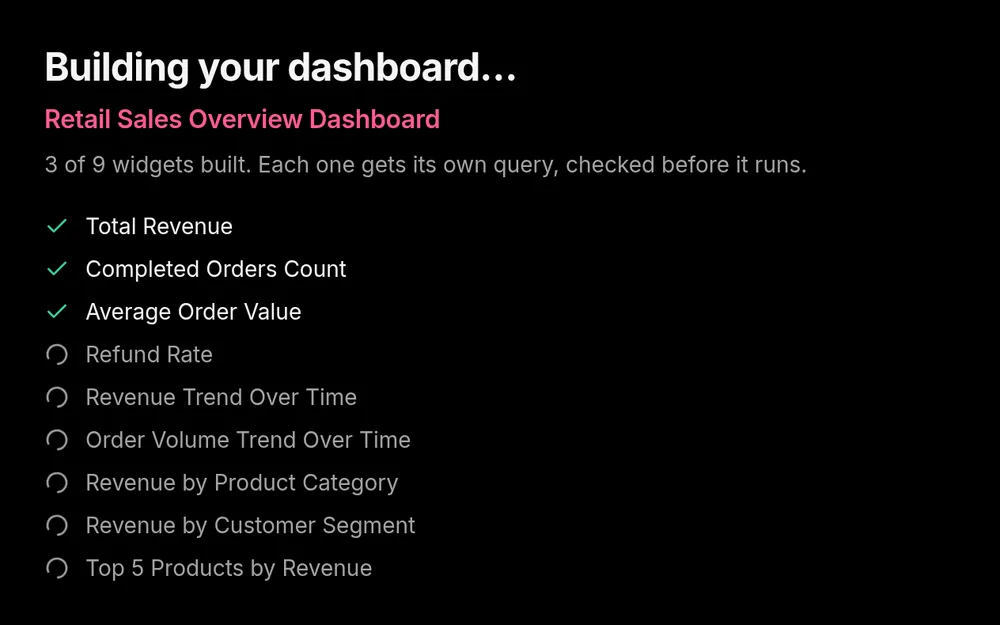

Build
A whole dashboard in about a minute
Upload an Excel or CSV file, or connect PostgreSQL or MySQL. The AI plans the dashboard an analyst would: the totals, the trend, the breakdowns, the top ten.
- Every chart’s query is run against your data before it’s added
- It only reads your database, never changes it
- It asks about columns that could be misread
